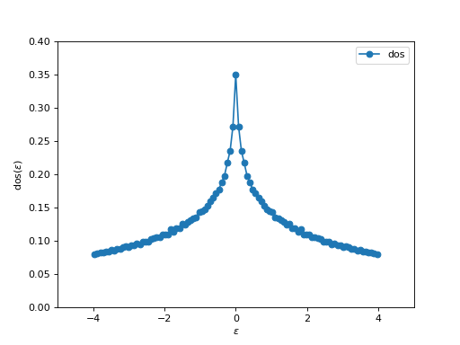

[triqs/lattice] Lattice tools¶
TRIQS comes with a couple of modules that allow to work with free fermions on Bravais lattices, with tight-binding hoppings.
Warning
This part of the documentation largely is work in progress …
Introductory example¶
from triqs.lattice.tight_binding import *
# Define the Bravais Lattice : a square lattice in 2d
BL = BravaisLattice(units = [(1,0,0) , (0,1,0) ])
# Prepare a nearest neighbour hopping on BL
t = -1.00 # First neighbour Hopping
tp = 0.0*t # Second neighbour Hopping
# Hopping[ Displacement on the lattice] = [[t11,t12,t13....],[t21,t22,t23....],...,[....,tnn]]
# where n=Number_Orbitals
hop= { (1,0) : [[ t]],
(-1,0) : [[ t]],
(0,1) : [[ t]],
(0,-1) : [[ t]],
(1,1) : [[ tp]],
(-1,-1): [[ tp]],
(1,-1) : [[ tp]],
(-1,1) : [[ tp]]}
TB = TightBinding ( BL, hop)
# Compute the density of states
d = dos (TB, n_kpts= 500, n_eps = 101, name = 'dos')[0]
# Plot the dos it with matplotlib
from triqs.plot.mpl_interface import oplot
from matplotlib import pylab as plt
oplot(d,'-o')
plt.xlim ( -5,5 )
plt.ylim ( 0, 0.4)
Here, we take the simple square lattice in d=2 and compute the density of state. It produces:
{kind=link}